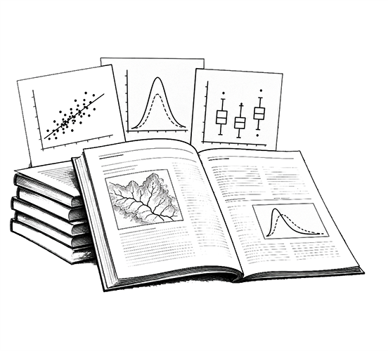
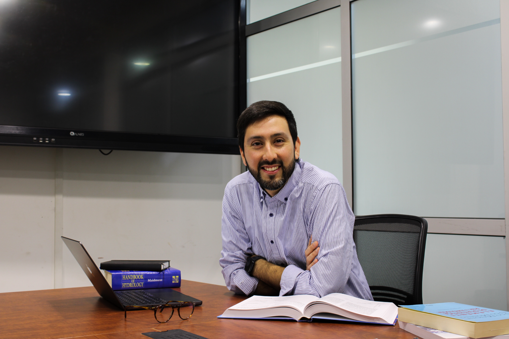
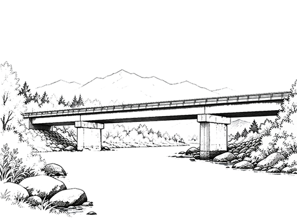
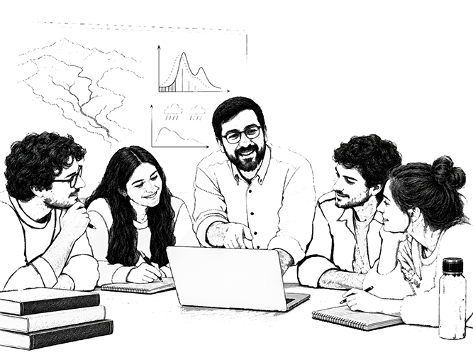
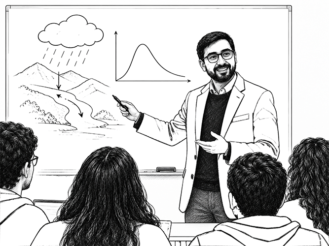

View Publications
View Publications Download CV
Download CV
Publications
Peer-reviewed articles in hydrology, river engineering and water resources.
View publicationsHydrology & Complex Hydrosystems
Assistant Professor at the Department of Civil and Environmental Engineering, Universidad del Bío-Bío (UBB), Chile. His research focuses on hydrology and stochastic processes, with particular emphasis on extreme flood events, rainfall–runoff modelling, and river monitoring. He is co-founder of the Young Hydrologic Society – Chilean Chapter, Principal Investigator of a FONDECYT de Iniciación project focused on flood resilience, leader of the Stochastic Approaches for Understanding Complex Environmental Hydrosystems (SAUCE) research group at UBB, and Associate Editor of the Hydrological Sciences Journal.

 48Publications
48Publications
 23h-index
23h-index
 9Funded Projects
9Funded Projects
 13Partner Institutions
13Partner Institutions

Peer-reviewed articles in hydrology, river engineering and water resources.
View publications

Working together to advance knowledge and build the next generation of engineers.
Meet the team
ANID FONDECYT Initiation project 11240171 develops an integrated probabilistic framework to estimate the current and future risk of bridge damage caused by flood-induced scour in Chile.
Learn more about the project
Reconstruct hydrological and hydraulic loading in ungauged basins and estimate design flows at bridge sites.

Model time-varying scour, redeposition and scour-dependent soil–pile interaction within a nonlinear bridge model.

Quantify engineering demands and bridge damage states under combined hydraulic and seismic actions.
Academic collaborations, thesis supervision, research partnerships and institutional inquiries.